🡸 Ingredientes
- 150 gr de chocolate para postres
- 150 gr de mantequilla sin sal
- 4 huevos
- 100 gr de azúcar
- 70 gr de harina de trigo
- Una pizca de sal
- Helado a tu gusto para acompañar, opcional
🡸 Paso a paso
- Pon en un bol el chocolate troceado y la mantequilla. Introduce el bol en el microondas durante un minuto a potencia máxima, saca el bol y remueve el contenido con una cuchara o espátula.
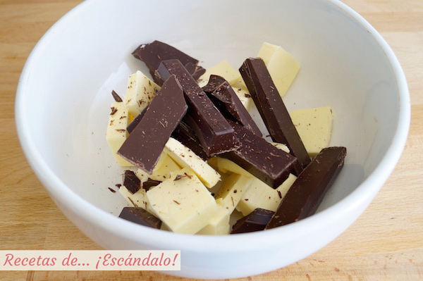
- Vuelve a introducir en el microondas otro minuto, sácalo y revuélvelo todo de nuevo. Si aún no se ha derretido todo puedes poner el bol unos segundos más en el microondas, pero no te pases de tiempo porque si quemas el chocolate te amargará
toda la mezcla, es mucho mejor ir poco a poco.
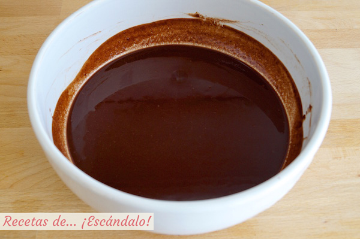
- Cuando esté todo más o menos derretido, remueve con una cuchara o lengua de cocina hasta que la mezcla sea homogénea.
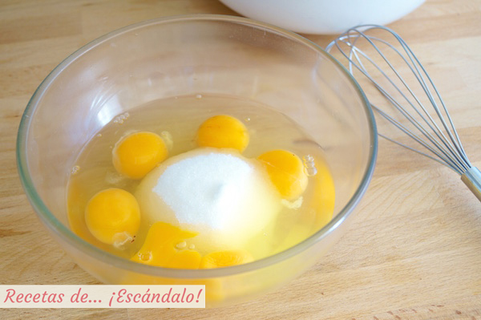
- En otro bol bate los huevos con el azúcar con la ayuda de unas varillas hasta que el azúcar se haya disuelto y la mezcla sea espumosa y de un color claro.
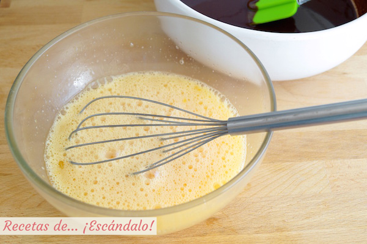
- Incorpora los huevos con el azúcar ya mezclados al bol con el chocolate y la mantequilla, y mézclalo todo bien.
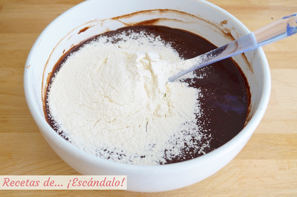
- Añade la harina tamizada, es decir, haciéndola pasar por un colador para que no caiga con grumos ni apelmazamientos, y remueve la mezcla para que quede homogénea. Incorpora también un poco de sal.
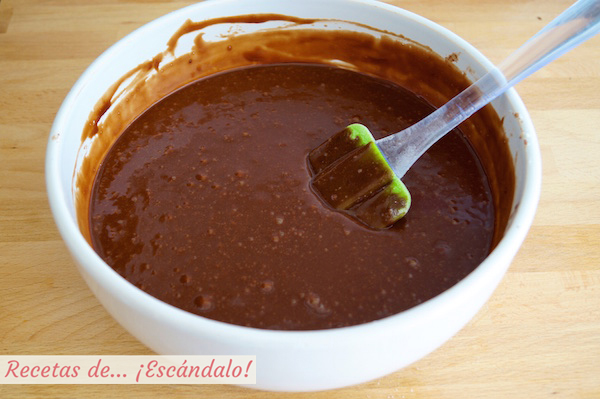
- Ahora vierte la mezcla en los moldes de silicona para coulant hasta cubrirlos un poco más de la mitad, y congélalos al menos 2 horas.
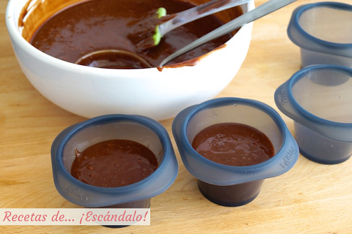
- Cuando los vayas a preparar, precalienta el horno a 190ºC con calor arriba y abajo y ventilador, y cuando haya alcanzado esa temperatura introduce los coulant en él en una posición media sobre una bandeja de horno.
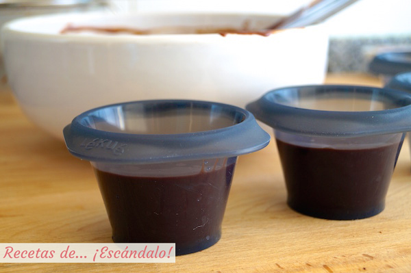
- El tiempo de horneado es la clave para obtener el coulant perfecto y, sin embargo, necesitamos experimentar un poco antes de saber cuál es ya que cada horno es un mundo. Yo he necesitado unos 16-17 minutos para que estén listos los
coulant, pero os recomiendo hacer una prueba con un coulant la primera vez y hornearlo ese tiempo. Si después del tiempo de reposo y haberlo desmoldado (te explico a continuación cómo hacerlo) está demasiado hecho, ya sabes que necesitas
rebajar el tiempo 1 o 2 minutos, y si por el contrario está demasiado líquido y es complicado desmoldarlo sin romperlo, la próxima vez dale 1 o 2 minutos más.
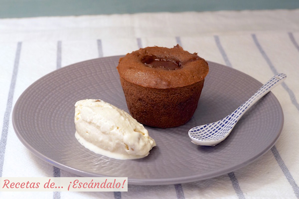
- Una vez horneados los coulant, sácalos del horno y déjalos reposar al menos 5 minutos. Una buena señal es que se vean cuajados aunque con el centro superior un poco más oscuro y «bailongo», y que se hayan separado de las paredes del
molde.
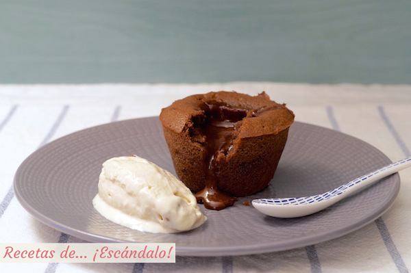
- Para desmoldar yo recomiendo la técnica usada para darles la vuelta a la tortilla (sobre todo para quienes nos gusta que el interior del coulant esté muy líquido): coloca un plato del revés encima del molde y dale rápidamente la vuelta, te
deberá quedar perfecto en el plato.
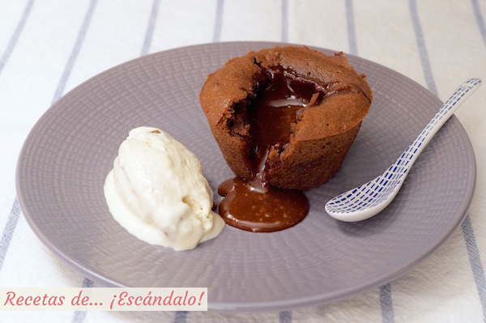
🡸 Resutado Final
Los coulant de chocolate se suelen hornear mientras se está comiendo o cenando, para servirlos justo en el momento del postre, recién hechos y tras el pequeño reposo. Puedes ponerlos en los platos de los comensales junto con una bola de tu helado
preferido (vainilla o turrón le van genial!), e incluso espolvorear canela o cacao en polvo por encima. Es un auténtico placer clavar la primera cucharada en el coulant y ver cómo fluye el chocolate caliente de su interior, sin duda una experiencia
de auténtico… ¡escándalo!